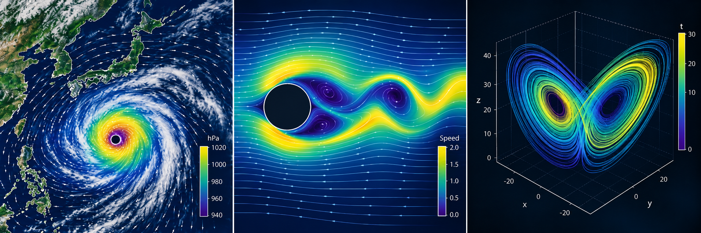

数値解析#
この講義では、数学的な問題を計算可能な形へ変換し、得られた数値を誤差・安定性・計算量の観点から評価するための基礎を学ぶ。公式の適用だけでなく、仮定を確認し、実装し、結果を検証するところまでを数値解析の一部として扱う。
実装にはJuliaを用いる。Juliaの事前知識は仮定しないが、微積分と線形代数の基礎、およびPythonなど何らかの言語による初歩的なプログラミング経験を前提とする。Juliaは、ベクトル・行列の記法が数式に近く、標準ライブラリだけでも主要な数値線形代数を扱えるため採用した。学習の中心は言語固有の文法ではなく、他の言語でも再利用できる数値計算の考え方に置く。
下に、数値解析（というよりは数値計算）のイメージ図を示した。 種々の科学計算においては、現象を数学的なモデルに置き換え、数値計算を通してそのモデルを解析することが多い。 この授業では、具体的な対象に対する数値計算を扱うことは少ないが、数値解析の考え方を理解することで、様々な科学計算の基礎を学ぶことができる。


到達目標#
講義終了時には、次のことができるようになることを目標とする。
問題の規模から、必要な演算回数・メモリ量のオーダーを見積もる。
浮動小数点数、条件数、安定性の違いを説明し、計算結果を検証する。
連立一次方程式、最小二乗問題、固有値問題を、問題の構造に応じて解く。
非線形方程式、補間、数値微分、数値積分に対する基本的な数値解法を実装する。
常微分方程式を離散化し、刻み幅と安定性を意識して数値的に解く。
数値計算の結果を、既知解との比較・刻み幅の変更・問題固有の性質などを組み合わせて検証し、その信頼性を自分の言葉で説明する。
（時間が許せば）連立一次方程式と固有値問題の反復法、並列計算の考え方を説明する。発展編のSVD・テンソル分解、Fourier解析、DMD、MCMCは自習用の資料とする。
一見、上の目標は込み入った内容に見えるが、各章は「問題を有限個の数で表し、構造を利用して解き、誤差を確かめる」という共通の流れを持つ。個々の公式を孤立して覚えるのではなく、この流れを異なる問題へ適用することを目指す。
このブックの使い方#
各章は「目標 → 数学的な考え方 → 最小限の実装 → 検証 → 演習」を基本として構成する。まず本文の小さな例で手順を追い、結果を予想してから出力と比較してほしい。章末の基本演習は、短い計算と、結果の意味を説明する問題を中心としている。作図や補足の実装をすべて再現することは、基本演習の前提にしていない。
ファイルの操作とプログラム実行の基本は第2章「Linux環境とコマンド」、必要なJuliaの書き方は第3章「Juliaと線形代数」で補う。第1章では、まず数式・手計算・表・図を追って数値解析の考え方をつかみ、コードの実行は環境を準備してから試してもよい。
基本的な数値計算のコードでは、Julia本体と標準ライブラリ LinearAlgebra、SparseArrays、Statistics、Random などを用いる。図の再作成には CairoMakie など、話題によっては別の追加パッケージも必要になるため、使用するコード付近の案内を確認してほしい。第1章の数値実験はJulia本体だけで実行でき、作図コードには CairoMakie が必要である。ブックに掲載された図を見るだけなら、作図コードの実行やパッケージの追加は不要である。
本資料は全16章からなり、次の四つの部を順に学ぶ。
部 |
章 |
内容 |
|---|---|---|
準備 |
第1〜4章 |
数値解析の考え方、Linux環境、Juliaと線形代数、誤差・条件数・計算量 |
基本アルゴリズム |
第5〜7章 |
連立一次方程式の直接法、最小二乗法、非線形方程式 |
近似と微分方程式 |
第8〜9章 |
補間・数値微分・数値積分、常微分方程式の初期値問題 |
発展・応用 |
第10〜16章 |
連立一次方程式の反復法、固有値問題、SVD・テンソル分解、Fourier解析、DMD、MCMC、並列計算（講義では第10・11・16章を選択的に扱う） |
各章の \(\clubsuit\) を付した節は補足・発展事項であり、初読時には飛ばしても、その後の章の基本部分を読み進められる。
注釈
本資料はJupyter Bookを用いて作成しており、ブラウザでの閲覧を想定している。 環境構築をしなくても実行できるよう、GoogleColabへのバッジを付けてあるが、数式や図の表示が不十分な場合があるため、コードを実行する際は、Julia 1.12以降のローカル環境を推奨する。
参考文献#
本資料の構成と例題を検討する際、以下の文献を参照した。
Tobin A. Driscoll and Richard J. Braun, Fundamentals of Numerical Computation. Julia、MATLAB、Pythonによる実装例を含むオンライン教科書。
Giray Ökten, First Semester in Numerical Analysis with Julia, Florida State University.
数学的記法(notation)について#
基本の記法は以下のとおりである。各章で別の意味に使う記号は、その箇所で定義する。第5章以降では、式を簡潔にするため、行列とベクトルの太字を省略して \(A\)、\(x\) のように書くことが多い。実数の例を中心とし、複素数を使う章では転置と共役転置を区別する。
記号 |
意味等 |
|---|---|
\(a, b, c, ..., x\) |
スカラー値 |
\(\mathbb{R}\) |
実数全体の集合 |
\(a \in \mathbb{R}\) |
aは集合\(\mathbb{R}\)の要素である |
\(\{ \ldots \}\) |
波括弧, 集合を表す |
\([ \ldots ] \) |
角括弧, 列ベクトルを並べて行列を表現する際などに用いる |
\(\mathbb{R}^n\) |
\(n\)次元実数ベクトル空間 |
\(\mathbf{a}, \mathbf{x}\) |
ベクトル, 太字のイタリック体を用いる |
\(\mathbf{A}, \mathbf{X}\) |
行列, 太字の大文字を用いる(例外あり) |
\(x^T, \mathbf{A}^T\) |
ベクトル・行列の転置 |
\(\mathbf{A}^*\) |
共役転置。Juliaの |
\(\mathbf{A}^{-1}\) |
逆行列 |
\(\mathbf{x} \cdot \mathbf{y}\) |
ベクトルの内積 |
\(\mathbf{x}^T \mathbf{y}\) |
ベクトルの内積(行列の一種であることをより意識した書き方) |
\(\mathbf{I}_m\) |
\(m\)次元単位行列 |
\(\mathbf{0}_m\) |
\(m\)次元ゼロ行列 |
\(\mathrm{dim}(V)\) |
ベクトル空間\(V\)の次元 |
\(\mathrm{rank}(\mathbf{A})\) |
行列\(\mathbf{A}\)の階数(rank) |
tr \((\mathbf{A})\) |
行列\(\mathbf{A}\)のトレース(trace) |
\(\det (\mathbf{A})\) |
行列\(\mathbf{A}\)の行列式(determinant) |
\(\lvert x\rvert\), \(\det(A)\) |
スカラーの絶対値、行列式（区別して記す） |
\(\lVert x\rVert_2\), \(\lVert A\rVert_2\) |
ベクトルの2ノルム、それに対応する行列の作用素ノルム |
\(\lVert A\rVert_F\) |
Frobeniusノルム。Juliaで行列に |
\(X \sim P\) |
確率変数\(X\)が分布\(P\)に従うことを表す |
\(\mathcal{N}(\mu, \sigma^2)\) |
平均\(\mu\)、分散\(\sigma^2\)の正規分布 |
\(\mathcal{N}(\boldsymbol{\mu}, \mathbf{\Sigma})\) |
平均\(\boldsymbol{\mu}\)、共分散行列\(\mathbf{\Sigma}\)の多変量正規分布 |